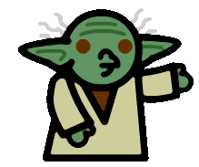

<!DOCTYPE HTML PUBLIC "-//W3C//DTD HTML 3.2//EN">
<HTML>
<HEAD>
<TITLE>The [UNOFFICIAL] Irish Star Wars Fan Club : Version : 2.11</TITLE>
<META NAME="GENERATOR" CONTENT="Kevin Gunn's Web-O-Rama, V. 7.20">
<META NAME="AUTHOR" CONTENT="ISW Admin">
<META NAME="DESCRIPTION" CONTENT="The unofficial Irish Star Wars fan club on the Internet">
<META NAME="KEYWORDS" CONTENT="Ireland Irish Star Wars ireland irish star wars ESB ANH TPM ROTJ esb anh rotj tpm Liam liam Neeson neeson Bronagh bronagh Gallagher gallagher Fan Club fan club ISW starwars return of the jedi a new hope the empire strikes back the phantom menace news views forum polls trivia editorials">
<!--<script language="javascript">
window.open("poll.html","polls","width=500,height=400,scrollbars");
</script>-->

</HEAD>

<!-- This file must be named index.html and the other frame files linked to it -->
<FRAMESET ROWS="129,*" FRAMESPACING="0" BORDER="NONE" FRAMEBORDER="0">
    <FRAME NAME="isw_top" SRC="top.html" MARGINWIDTH="0" MARGINHEIGHT="0" NORESIZE scrolling="no">
        <FRAMESET COLS="131,*">
           <FRAME NAME="isw_menu" SRC="menu.html" MARGINWIDTH="0" MARGINHEIGHT="0" NORESIZE scrolling="auto">
           <FRAME NAME="isw_main" SRC="news.html" MARGINWIDTH="0" MARGINHEIGHT="0" NORESIZE scrolling="auto">
        </FRAMESET>
</FRAMESET>
<NOFRAMES>
<!-- Put something here for non-frame browsers -->
<P>...get a browser that accepts frames</P>
<P><A HREF="menu.html">Menu Page</A></P></NOFRAMES>
</HTML>